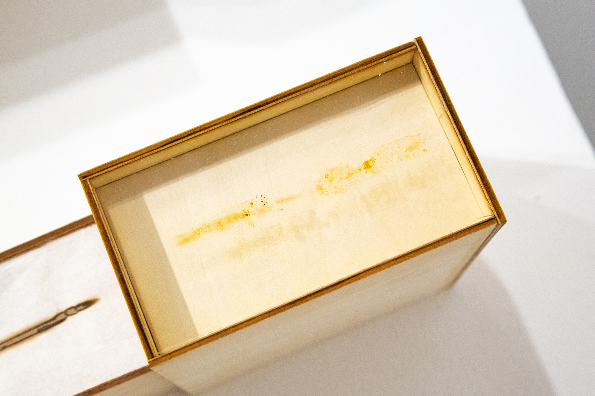
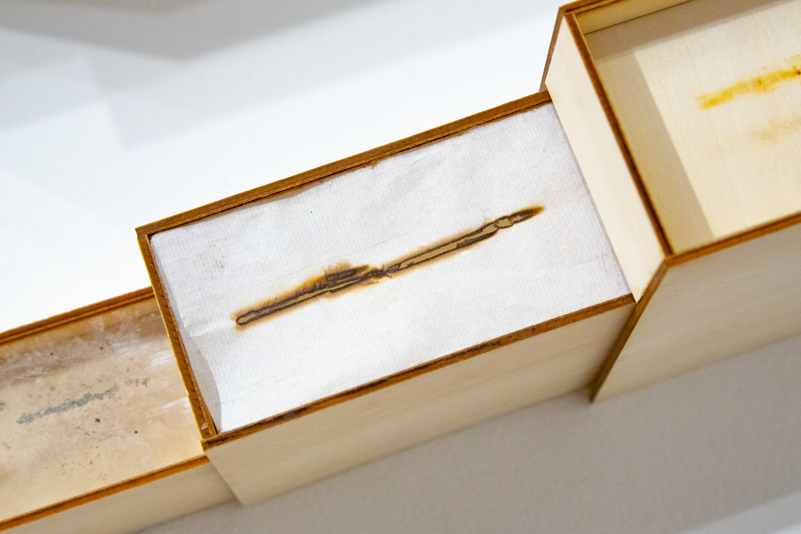
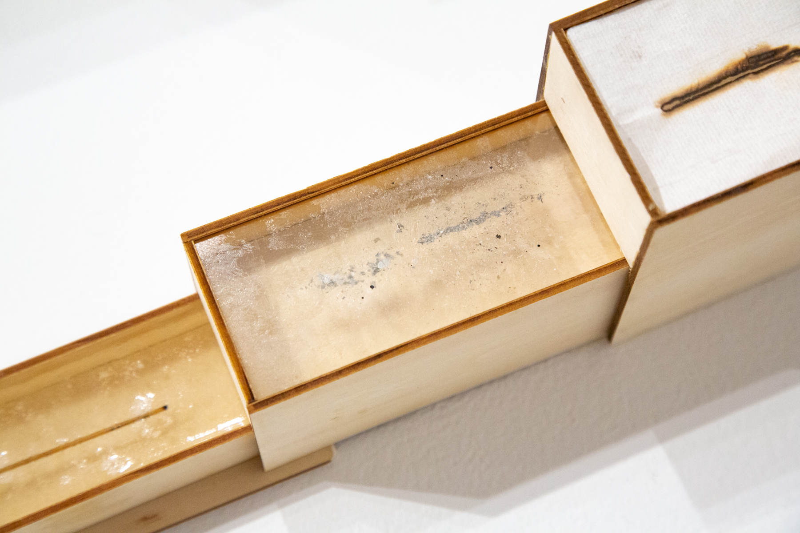
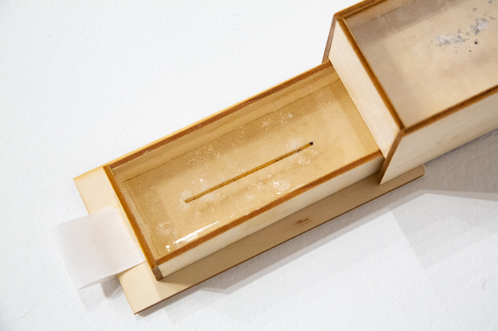

×

×


×

×

×

×
「天日のうつりて暗し蝌蚪の水」(tenjitsu no utsurite kurashi kato no mizu). 2023. Plywood, incense burn residue on glass, incense fumage drawing on xuan paper, incense ash on transparency, and incense stick in resin.
[Open] 113.0 x 17.3 x 34.3 cm. (44.5 x 6.8 x 13.5 in).
[Closed] 34.0 x 17.3 x 34.3 cm. (13.4 x 6.8 x 13.5 in)
「天日のうつりて暗し蝌蚪の水」(tenjitsu no utsurite kurashi kato no mizu) is a visual translation of a haiku written by 高浜虚子 TAKAHAMA Kyoshi:
天日のうつりて暗し蝌蚪の水
tenjitsu no / utsurite kurashi / kato no mizu
the sun in the sky / is mirrored leadenly on the water / where tadpoles live (tr. by 上田 真 UEDA Makoto)
Similar to how the haiku likens the shape and colour of the reflection of the sun in water to tadpoles, this work links incense and its residue with notions of time and indexicality. As the viewer tugs on the ribbon, a subsequent level of abstraction and semiotic metaphor is revealed layer by layer, beginning with the oily residue from a burning stick of incense, then a fumage drawing using the same stick of incense, followed by the residual ash from the incense, and culminating in the end stick of the incense. Each layer presents a varying degree of evidence—index—of burning incense—of time passing—all within the context of the unfolding, revelatory nature of the haiku.